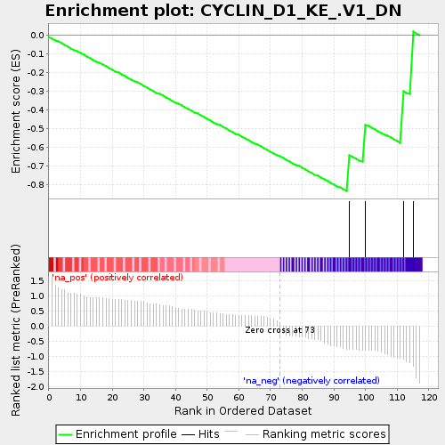
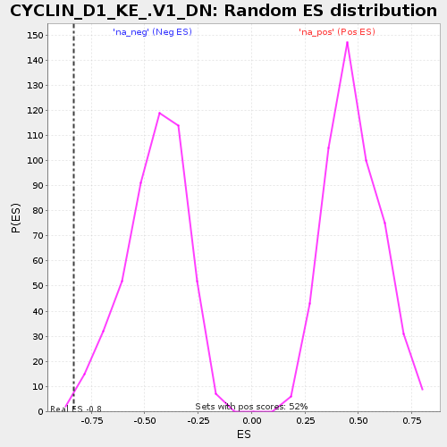

| | | Dataset | selected_gsea_35 |
| Phenotype | NoPhenotypeAvailable |
| Upregulated in class | na_neg |
| GeneSet | CYCLIN_D1_KE_.V1_DN |
| Enrichment Score (ES) | -0.8333333 |
| Normalized Enrichment Score (NES) | -1.8477919 |
| Nominal p-value | 0.004132231 |
| FDR q-value | 0.2549294 |
| FWER p-Value | 0.923 |
Table: GSEA Results Summary

Fig 1: Enrichment plot: CYCLIN_D1_KE_.V1_DN
Profile of the Running ES Score & Positions of GeneSet Members on the Rank Ordered List
| PROBE | GENE SYMBOL | GENE_TITLE | RANK IN GENE LIST | RANK METRIC SCORE | RUNNING ES | CORE ENRICHMENT | | 1 | FES | | | 95 | -0.755 | -0.6426 | Yes |
| 2 | MXI1 | | | 100 | -0.789 | -0.4785 | Yes |
| 3 | CAMK4 | | | 112 | -1.094 | -0.2987 | Yes |
| 4 | AKAP6 | | | 115 | -1.322 | 0.0175 | Yes |
Table: GSEA details [plain text format]

Fig 2: CYCLIN_D1_KE_.V1_DN: Random ES distribution
Gene set null distribution of ES for CYCLIN_D1_KE_.V1_DN